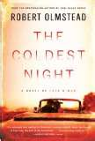

Coal Black Horse and Far Bright Star convinced me that Robert Olmstead can write as well as anyone around about the solitude, the boredom, the hellish waiting and the sheer horror that beset men at war, about to go to war and trying to recover from war. He also has few rivals when it comes to writing about horses and men. At his best he invites comparison to Hemingway, Crane and McCarthy, and in much of The Coldest Night he is at his best. Olmstead writes of violence and its impact as few American writers today do, with a moral compass which directs timing, detail, duration and context, always in the service of reminding us that violence is not a flashy bouquet to flourish for the pleasure of the nearly-unshockable, nearly-insatiable contemporary audience. Like Yeats, he knows that something terrible can be beautiful, but it is no less terrible for that.
{kind=link}
In brief: The Coldest Night‘s Henry Childs is a sensitive but strong West Virginia adolescent who falls in love with Mercy, a girl above his station in life. In Part 1, the teenagers tease and tryst and abscond together, but paternal power eventually catches up to them and metes out punishment. In Part II, Henry and his fellow Marine, the wise-cracking Lew Devine, march and crouch, scamper and flinch, kill and pity, learning all the steps in the dance of death as it is performed in the Chosin Reservoir. Part III: though wounded and damaged, Henry returns to Charleston and strives to recover, but he is stamped with blood to his core, and his experiences dominate his waking and dreaming life.
What I love about this book is its engagement with the environment — natural, man-made or just hellish. Olmstead is one of our great observers and listeners — “Beyond them in the darkness came a whippoorwill’s call and then the banging sound of a train taking up slack.”
Chapter 14 begins to describe the American forces’ movement toward combat: “It was the Korean autumn when the division marched north through the dusty barren countryside, marched up through the rice fields and apple orchards. It was the shineless autumn sky in the season of mortality and turning into winter as they marched north along the east coast highway through the tiny villages. The fruit trees were leafless and stripped bare of their fruit and some were split and shivved and splintered with bullets and their upturned roots exploded from below the ground in broken claws.” Almost Hemingway, or James Jones, but Olmstead boldly lets the sentences march on with no impediment, as the precision of his observation creates the clarity.
The book’s significant disappointment, at least for my taste, lies in its final dozen pages and its opening section. Although Henry’s mother and grandfather are captivating characters, and the boy’s thoughts and actions concerning a particular horse are appealing, the love story in Part I wears thin quickly. However engaging Henry is in other matters, his take on romance (along with the narrator’s) veers too closely to the conventions and language of the Romance genre for me, too much theatrical moonlight and sighing. The quick transformation from puppy love to usually-euphemistic sex scenes (binges, really) is too predictable, and the star-crossed lovers of section I seem more callow than their famous antecedents, and without the Shakespearean language.
I understand that Olmstead is creating a counterpointing architecture for the book, and perhaps the love story must be hyperbolic and Henry must attract our sympathies (even if Mercy is too fey and scatty to earn them), and Henry must also be heart-broken and desperate by the end of the first act. But Henry is much more alive and interesting when he’s thinking about something else, with memories of Mercy just coloring the present, than when she’s physically present.
That said, the story of brotherhood under arms, of how modern warfare creates a wasteland whose survival hardly seems worth the anguish, of growth and the making of a man in a crucible designed to dehumanize all — that story is rendered here with Olmstead’s signature command of language and empathy. Weather, landscape, the movements of adversaries and how they register and are turned in the mind of a man who wants to understand and take responsibility for his own acts and thoughts — Olmstead manages these as well as anyone, and no one could fault him for lack of ingenuity or heart.
–RTS